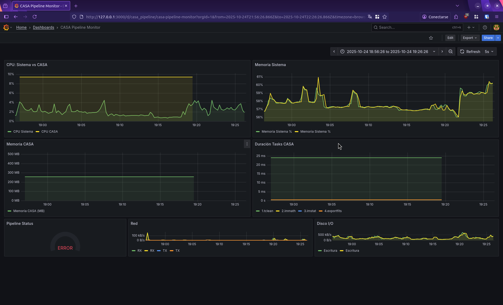
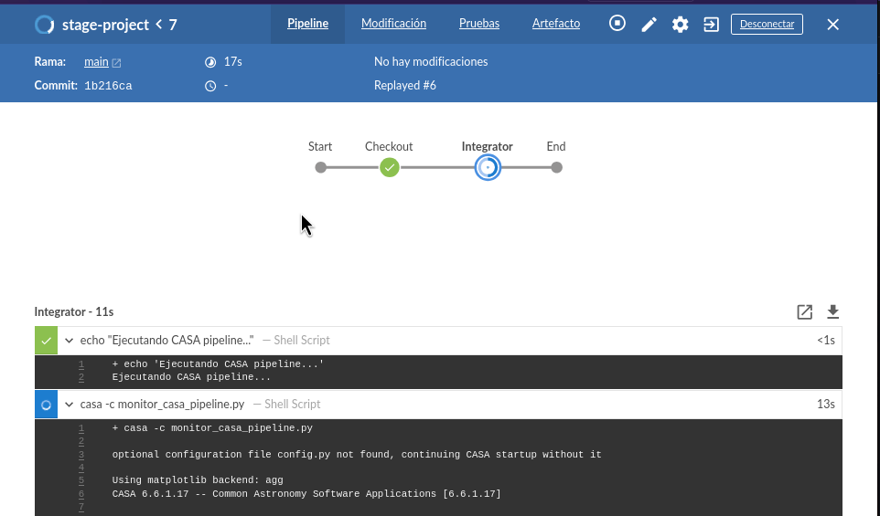

Technician in Computer Science and Informatics with a solid foundation in system fundamentals and software architecture.
2 years working intensively with Linux systems, automation, and server administration.
Passionate about distributed systems, scalable architectures, and observability. Experience with monitoring tools, CI/CD, DevOps, and FOSS.
Complete CI/CD pipeline implementation with Jenkins, integrated with an observability stack using Grafana and Prometheus for real-time monitoring of metrics and logs, utilizing CASA software and its pipeline in version 6.6 in both cases.
Monitoreo básico del sistema
Jenkins + Grafana + Prometheus

Reat time metrics

Automated CI/CD